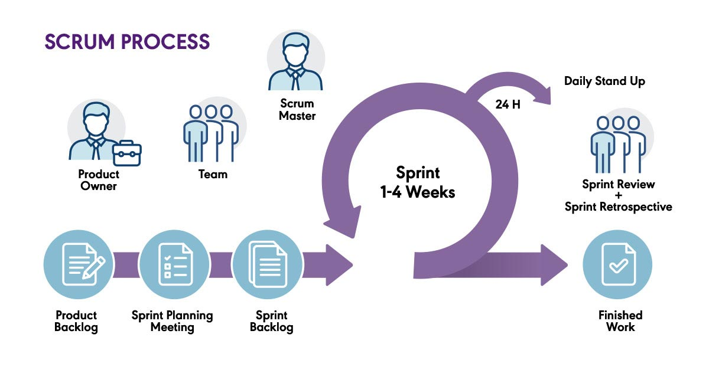

Syllabus
Research and use the Agile software development approach, including:
- rate of developing a final solution
- method tailoring
- iteration workflow
- scale and types of developments
Learning Intention and Success Criteria
Learning Intention - Students will:
- Explore the Agile software development approach, including its focus on rapid delivery, iterative workflow, method tailoring, and how it can be applied to different scales and types of projects.
Success Criteria - Students can:
- Understand the rate at which Agile delivers working solutions.
- Explain how method tailoring allows for flexibility in Agile.
- Describe the iteration workflow used in Agile development.
- Recognise how Agile scales across different types and sizes of projects.
Content
The Agile software development approach is designed to address the challenges of rapidly changing requirements in software projects, especially when the development environment is unpredictable or evolving. Unlike traditional software development methodologies that rely on rigid stages and thorough documentation upfront, Agile promotes flexibility, collaboration, and iterative development. The focus is on delivering workable solutions to users quickly, then continuously refining and expanding the software based on user feedback and changing needs.
What is Agile?
Agile is a flexible and iterative approach to software development that focuses on delivering small, functional increments of a solution quickly, while continuously adapting to changes based on user feedback and collaboration.
Rate of Developing
One of the most important characteristics of Agile is the speed at which a basic, working version of the solution can be developed and delivered to users. This is achieved through short development cycles, or iterations, each of which focuses on delivering a functional increment of the software.
-
Initial Delivery: In Agile, the goal is to release a simplified version of the software with essential features as quickly as possible, allowing real users to begin interacting with it early in the development process. This version, often called a Minimum Viable Product (MVP), serves as the foundation for future improvements.
-
Frequent Releases: Agile prioritises small, frequent updates over a single large release at the end of the project. Each iteration adds new features or improves existing functionality, which allows the team to respond quickly to changing requirements or feedback.
-
Continuous Improvement: Because working software is released regularly, users and stakeholders can continuously provide feedback, allowing the development team to refine the solution and add functionality incrementally.
The focus on quick delivery allows Agile projects to get usable software into the hands of users early, ensuring that the project delivers value even before it's fully complete.
Method Tailoring
Method tailoring refers to the flexibility Agile offers in adapting its practices to suit the specific needs of a project, team, or organisation. Rather than adhering to rigid guidelines, Agile allows teams to customise the development process to better meet the project’s requirements.
-
Choice of Frameworks: Agile includes a variety of frameworks like Scrum, Kanban, or Extreme Programming (XP). Each framework has its own set of practices and tools, but they share the core Agile principles of flexibility, collaboration, and iterative development. Teams can choose the framework that best fits their project or even combine practices from different frameworks.
- Scrum: Often used for complex projects, it emphasises short, time-boxed iterations called sprints, with regular meetings (e.g., daily stand-ups) to keep the team on track.
- Kanban: Focuses on visualising the workflow and limiting the number of tasks in progress, which makes it useful for teams that need flexibility without fixed sprint cycles.
- XP (Extreme Programming): Focuses on technical excellence, including practices like test-driven development (TDD) and pair programming, which improve code quality.
-
Customising Processes: Teams can tailor the Agile process itself by adjusting sprint lengths, deciding how to collect and act on feedback, or choosing how to track progress (e.g., using a task board in Kanban or sprint backlogs in Scrum). This adaptability ensures that Agile can be applied to various project types, team structures, and organisational cultures.
Method tailoring in Agile allows teams to be more responsive and ensures the development process fits the project’s unique demands, rather than forcing the project to fit into a predefined methodology.
Iteration Workflow
In Agile, development is conducted through a cycle of short, repeatable development stages called iterations. Each iteration results in a working version of the software that can be tested, reviewed, and evaluated by stakeholders.
-
Planning: At the start of each iteration, the team collaborates to determine the most important features or tasks to focus on. These are often selected from a backlog of user stories or requirements. Prioritisation ensures that the highest-value features are developed first.
-
Design and Development: Once the priorities for the iteration are set, the team moves into designing and coding the features. Unlike traditional development approaches, design and development in Agile are often informal and adaptive, allowing for quick adjustments as new insights are gained.
-
Testing: Testing is a crucial part of each iteration, ensuring that the features developed work as expected. Agile encourages continuous integration, where new code is integrated into the system regularly and immediately tested to catch any issues early.
-
Feedback and Evaluation: At the end of the iteration, the working software is released, either to the client or to end-users. The feedback gathered from these users is critical and informs the direction of the next iteration. This allows the software to evolve according to real-world needs and preferences.
-
Iterative Cycle: After feedback is received, the team returns to planning, beginning the next iteration with new priorities. Each iteration builds on the previous one, adding more functionality or improving existing features.
Agile’s iterative workflow ensures that development remains focused on delivering value, with each iteration improving and expanding the product in a meaningful way.
Developments
Agile is highly adaptable and can be applied to both small and large-scale projects, as well as across different types of software development efforts.
-
Small Projects: Agile works particularly well for small to medium-sized projects, where the flexibility of small teams allows for quick decision-making and fast adaptation to change. This includes projects like mobile applications or web-based tools, which often require rapid development cycles and frequent updates.
-
Large Projects: Although Agile is often associated with smaller teams, it can also be scaled to larger projects. When working on large-scale systems or enterprise-level software, Agile can be applied by breaking the project down into smaller, self-organising teams that each focus on a component or feature of the larger system. Techniques like Scaled Agile Framework (SAFe) and Large Scale Scrum (LeSS) provide strategies for coordinating multiple Agile teams working on a single project.
-
Types of Developments:
- Mobile App Development: Agile is well-suited for mobile apps because of the need for rapid iterations, frequent updates, and user feedback.
- Web Development: For web-based applications or services, Agile helps deliver continuous updates and improvements, allowing the product to evolve based on user needs.
- Enterprise Systems: While more complex, Agile has been successfully applied to the development of large enterprise systems by scaling the methodology to involve multiple teams working in parallel.
Agile’s flexibility and scalability make it a suitable approach for a wide range of project types, from small apps requiring frequent updates to complex, large-scale systems.
Collaboration in the Agile approach
Agile is distinct in its collaborative nature. Teams work closely with one another, as well as with users, throughout the development process. The inclusion of users (or their representatives) as active participants in the development team ensures that the software meets real-world needs. The feedback loop between the development team and users is continuous, with each iteration refining the product based on insights gained through actual usage.
In Agile, the team uses user stories to prioritise development tasks. These stories are narratives that describe how a user interacts with the system to accomplish a specific goal. By focusing on user stories, Agile ensures that each iteration delivers meaningful features that solve real problems for users.

Theory
- Direct the students to an activity to be completed in their OneNote
Practical
- Provide instructions for a practical activity or direct the students to an EdStem activity
Sources
- Software Engineering, The Year 11 Course